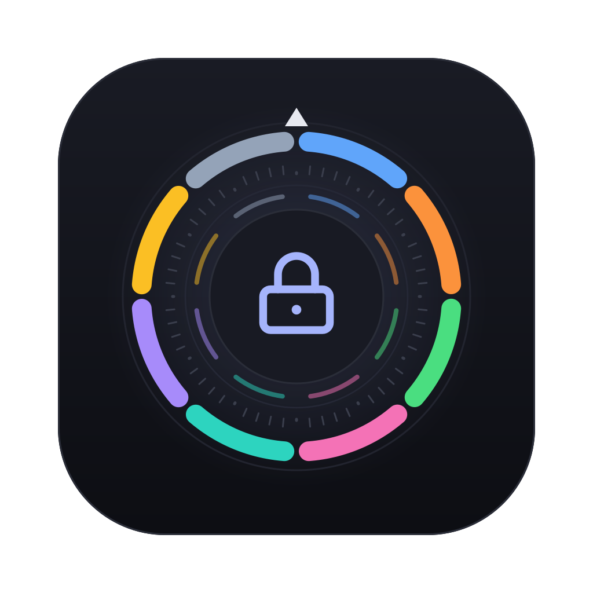

SecretClip
🇮🇹 Note cifrate, sincronizzate sul tuo Google Drive
SecretClip è un'app per appunti (testo, immagini, allegati) per Mac, Windows e browser. Tutto viene cifrato sul tuo dispositivo con una password che conosci solo tu, prima di essere salvato.
Se colleghi Google Drive, SecretClip salva le note cifrate in una cartella nascosta riservata all'app, nel tuo Drive. L'app non vede gli altri file del Drive e lo sviluppatore non riceve mai le tue note né i tuoi dati.
🇬🇧 Encrypted notes, synced to your Google Drive
SecretClip is a notes app (text, images, attachments) for Mac, Windows and the browser. Everything is encrypted on your device with a password only you know, before it is saved.
If you connect Google Drive, SecretClip stores the encrypted notes in a hidden folder reserved to the app, in your Drive. The app cannot see your other Drive files and the developer never receives your notes or your data.